Art direction
Laguna College of Art + Design, 2022 to present. Student work shown with my marks on top.
Team project


Briefs and milestones


More briefs

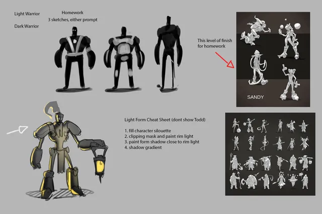
Character Design 1: world brief for the semester
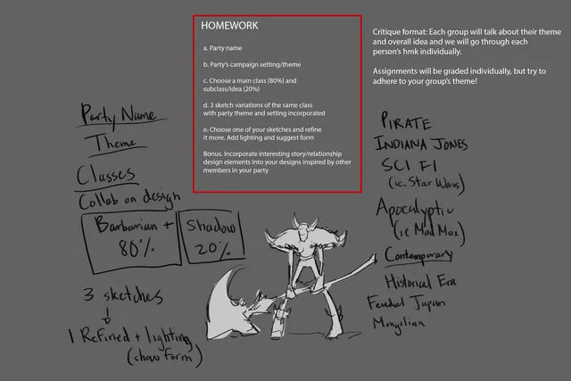
Character Design 1: party brief and deliverables
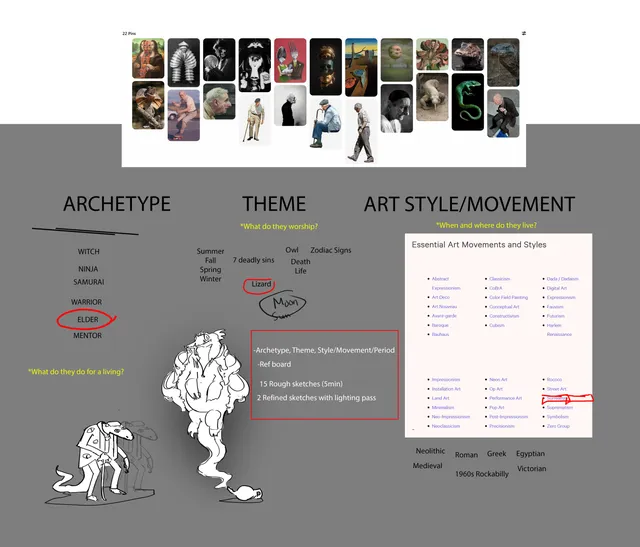
Character Design 1: archetype, theme and art style brief
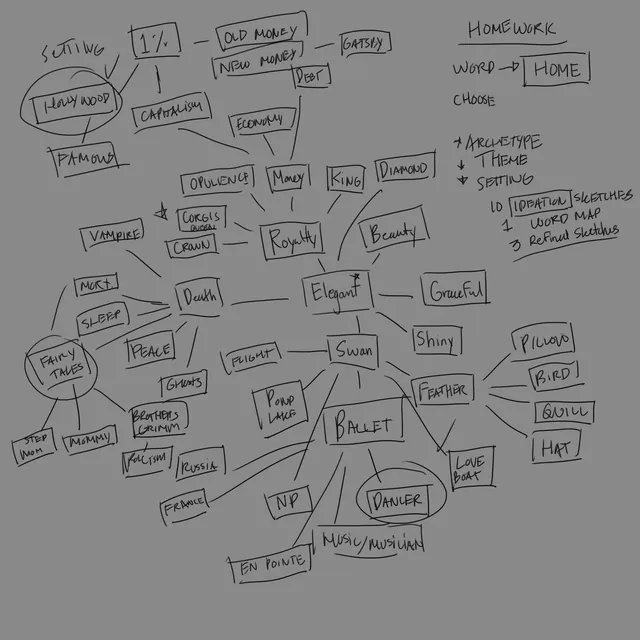
Character Design 1: word map for finding a direction
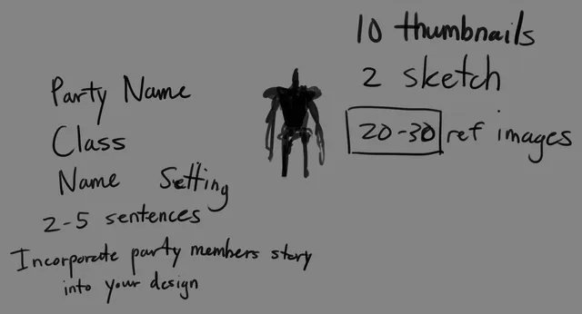
Character Design 1: week 2 deliverables
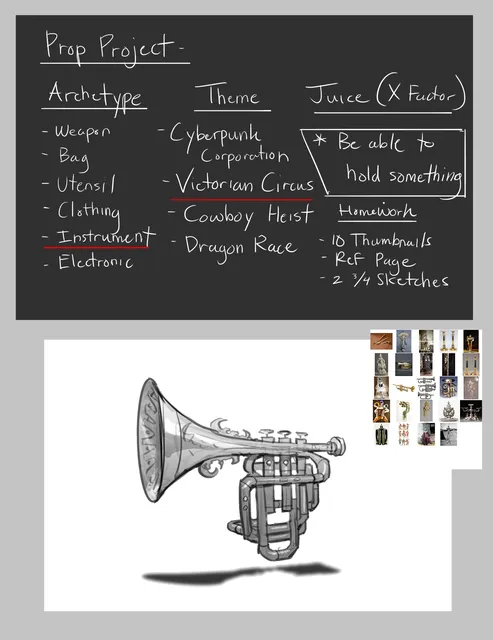
Character Design 1: prop project brief
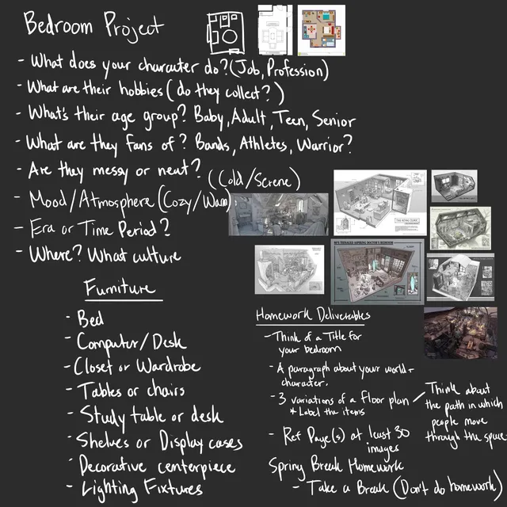
Fundamentals: bedroom project brief, questions the design has to answer
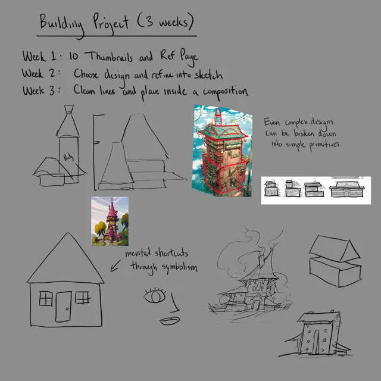
Fundamentals: three week building project plan
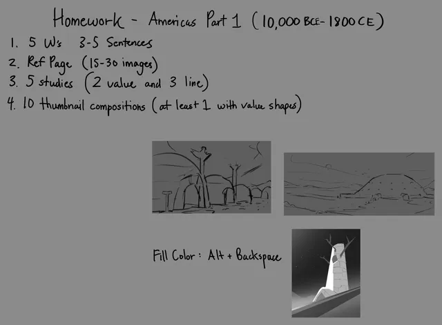
Environment Design 1: research and thumbnail deliverables
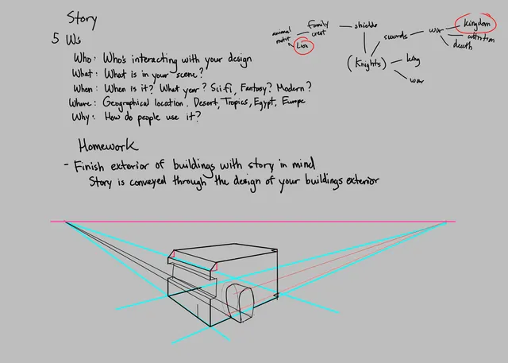
Sketching: story questions before design
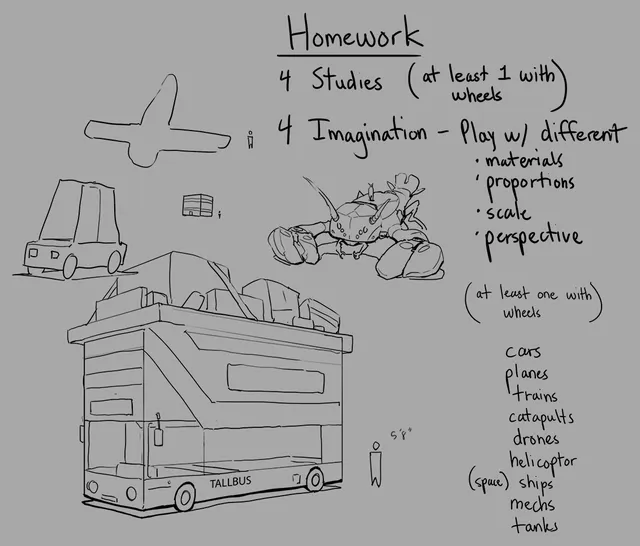
Sketching: vehicle studies brief
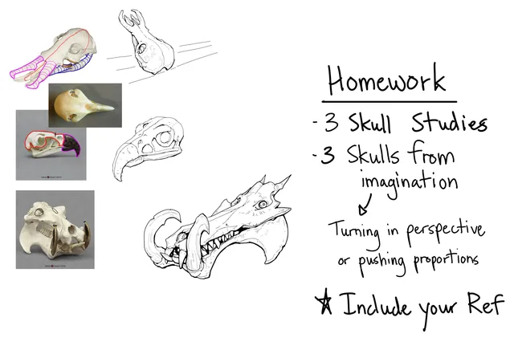
Sketching: skull studies brief
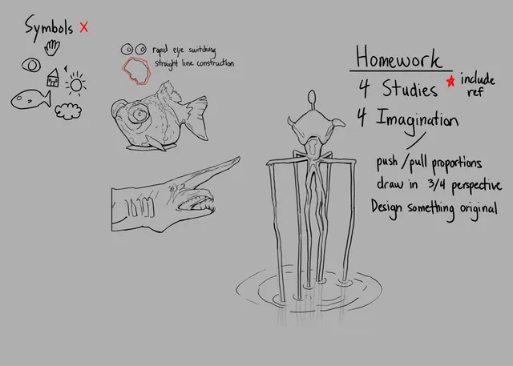
Sketching: study and imagination brief
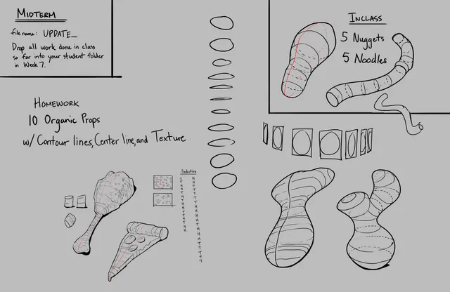
Sketching: midterm and organic props brief
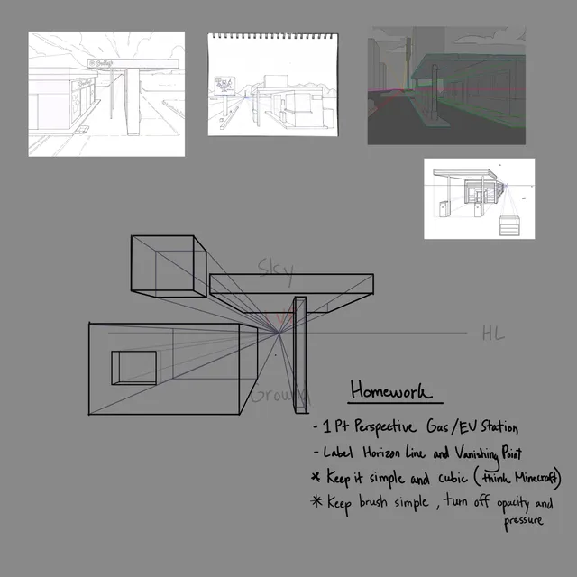
Sketching: perspective homeworkRedlines

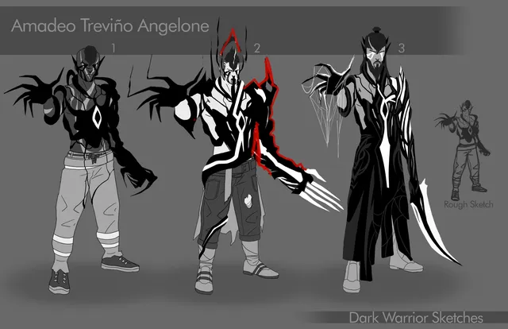
Sketch review with my redlines
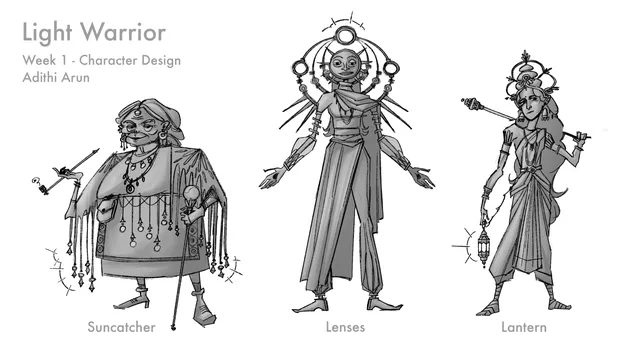
Sketch review with my redlines
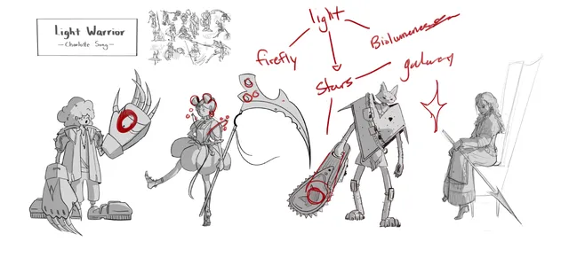
Sketch review with my redlines
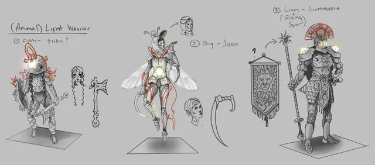
Sketch review with my redlines
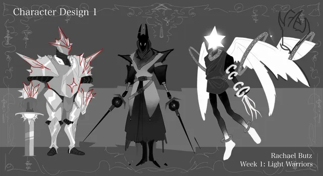
Sketch review with my redlines
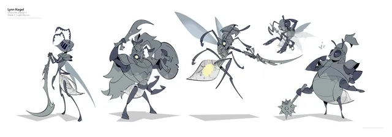
Sketch review with my redlines
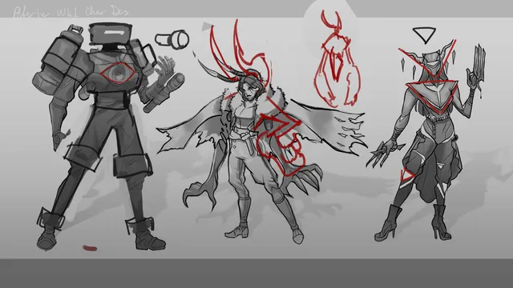
Sketch review with my redlines
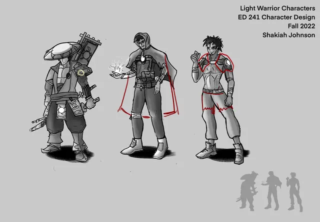
Sketch review with my redlines
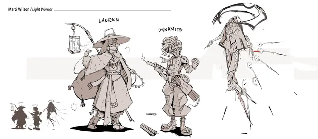
Sketch review with my redlines
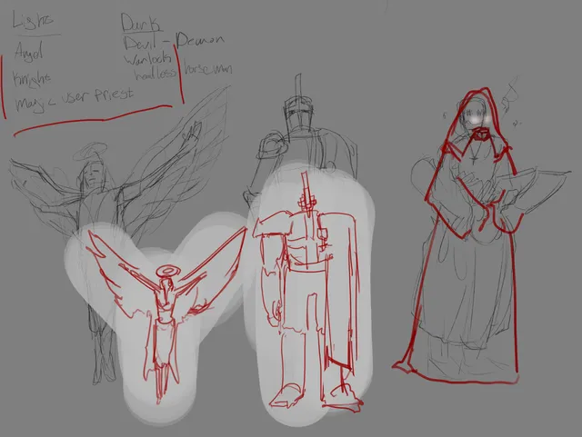
Sketch review with my redlines
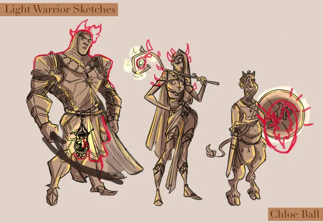
Sketch review with my redlines
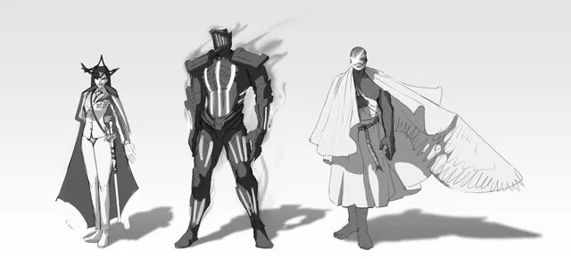
Sketch review with my redlines
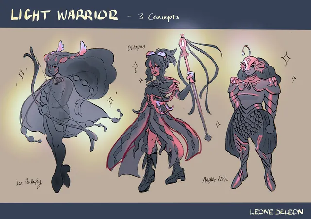
Sketch review with my redlines
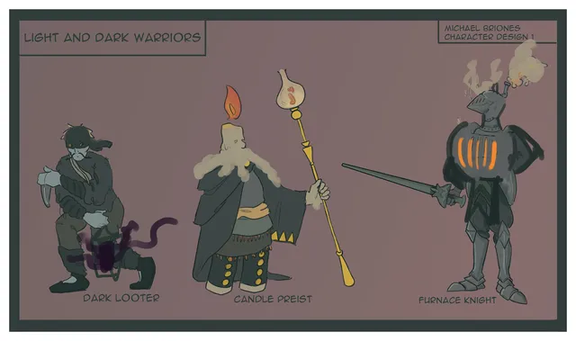
Sketch review with my redlines
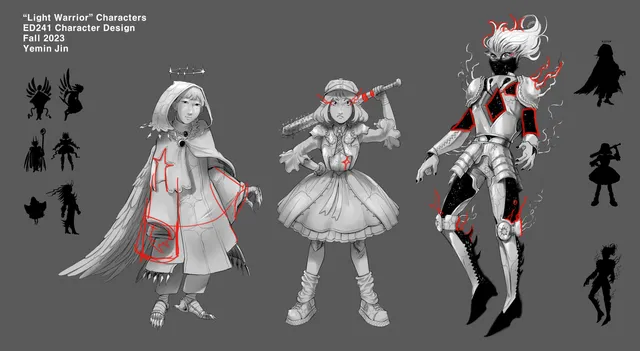
Sketch review with my redlines
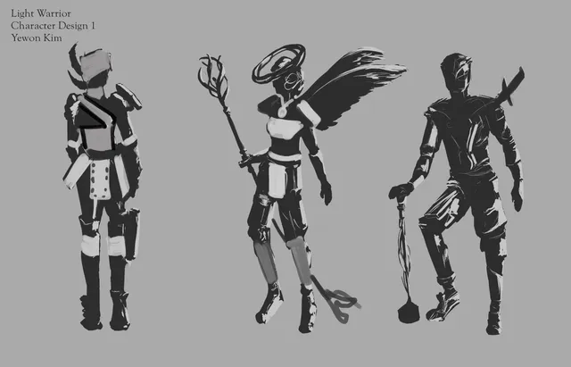
Sketch review with my redlines
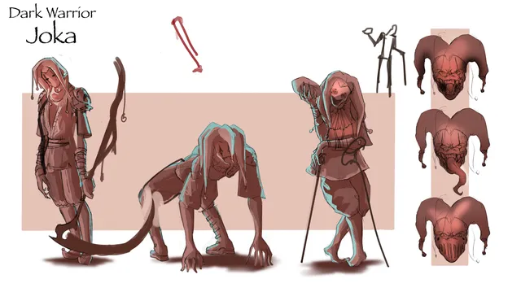
Sketch review with my redlinesThree review rounds

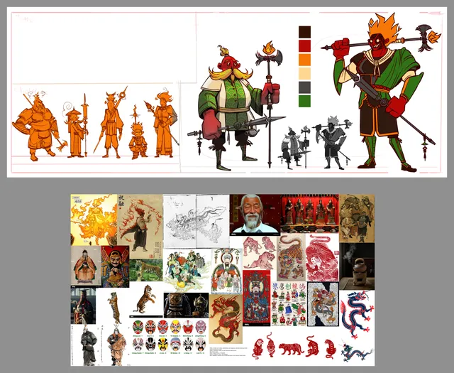
Round 1, week 7: drawover
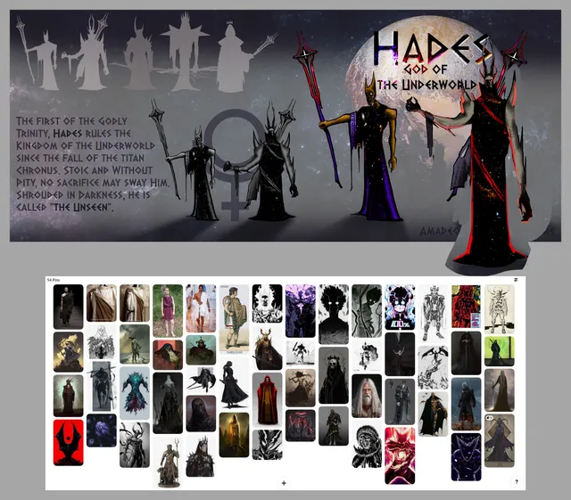
Round 1, week 7: drawoverRound 1, week 7: drawoverRound 1, week 7: drawoverRound 1, week 7: drawoverRound 1, week 7: drawoverRound 1, week 7: drawoverRound 1, week 7: drawoverRound 1, week 7: drawoverRound 1, week 7: drawoverRound 1, week 7: drawoverRound 1, week 7: drawoverRound 2, week 9: paintoverRound 2, week 9: paintoverRound 2, week 9: paintoverRound 2, week 9: paintoverRound 2, week 9: paintoverRound 2, week 9: paintoverRound 2, week 9: paintoverRound 2, week 9: paintoverRound 2, week 9: paintoverRound 2, week 9: paintoverRound 2, week 9: paintoverRound 2, week 9: paintoverRound 2, week 9: paintoverRound 2, week 9: paintoverRound 2, week 9: paintoverRound 3, week 11: paintoverRound 3, week 11: paintoverRound 3, week 11: paintoverRound 3, week 11: paintoverRound 3, week 11: paintoverRound 3, week 11: paintoverRound 3, week 11: paintoverRound 3, week 11: paintoverRound 3, week 11: paintoverRound 3, week 11: paintoverRound 3, week 11: paintoverRound 3, week 11: paintover


Demos
Environment demo: cave interiorEnvironment demo: room cutawayEnvironment demoEnvironment demo: gate designEnvironment demo: prop and signage setEnvironment demo: value and proportionReview demo: interior cutawayDrawover demoReview board: sea animalsDemo: sea animalsDemo: animals from reference and imagination